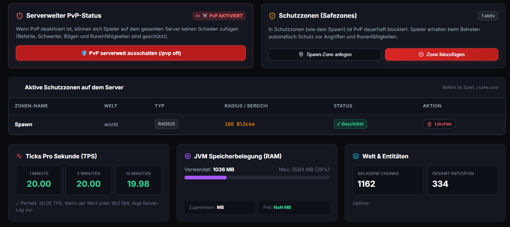

One button. That's all it did. I stared at it for ten minutes.
Before this site, before any of the projects below, there was one small thing that
actually ran the way I meant it to. It wasn't impressive. Nobody else would have looked
twice. But it was mine, and it worked, and that changed what I thought I could do next.
what actually helped
Start smaller than feels worth it. The first working thing doesn't need to be good — it needs to prove the loop works, so you'll do it again.
panel 3 / 7
the tricky part
Three days on one error. I almost quit.
The console just said undefined is not a function. I changed things at random
hoping something would fix it. Nothing did. I didn't tell anyone I was stuck —
it felt like proof I wasn't cut out for this.
what actually helped
The error message tells you the file and line number — read that part first, not the scary red text. Most of the time the bug is exactly where it says it is.
panel 4 / 7
the part I don't put in the project list
I lost two projects. One of them was 60+ hours.
A Discord tool, gone. Then a full admin dashboard I'd built for a Minecraft server —
login pages, a database, live server stats, a permissions system — 60-plus hours,
gone with no backup anywhere. Both are in the projects section below with no repo link,
because there isn't one anymore.
what actually helped
Push to a repo the same day you start, even a private one nobody else will see. It costs nothing and it's the only thing that would have saved either project.
panel 5 / 7
imposter syndrome
Everyone else's code looked like it was written by an adult.
I'd open someone else's repo and it looked clean, organized, like they'd never once
been confused. Mine never looked like that. I assumed that meant something about me,
instead of just meaning I was only seeing their finished version.
what actually helped
You're comparing your rough draft to someone else's final cut. Nobody's commit history looks clean while they're actually writing it.
panel 6 / 7
asking for help
Asking felt like admitting I'd already failed.
I'd sit on a problem for hours before asking anyone, because asking felt like proof I
couldn't do it alone. It took a while to notice that the people I looked up to asked
questions constantly, in public, without it costing them anything.
what actually helped
Write the question down before you send it. Half the time, writing it out clearly enough for someone else to understand is what shows you the answer.
panel 7 / 7
where that leaves me
This site is the first thing I'm actually publishing.
Not because I stopped being scared of it going badly. I haven't. But the projects
below are real, the failures in this story are real, and I'd rather put both out
than wait for a version of me that isn't scared anymore.
what actually helped
Publishing scared is still publishing. Waiting for confidence first usually just means waiting forever.
Things I've built
web & software
the biggest thing I've built
RuneSMP — Custom Admin Dashboard
I don't trust built software, so I built my own. A full control panel for running
a Minecraft server — PvP toggling, safezone management, live TPS/RAM/JVM
monitoring, and a permissions editor with per-node allow/deny/inherit rules and
weighted groups. Over 60 hours went into this.
Source is gone — lost with no backup. What's here is from screenshots,
because losing 60+ hours of work doesn't erase that it existed, or that it worked.

backend
Java Paper plugin exposing live server data (TPS, RAM, JVM) and applying changes in real time through an API.
frontend
Login-gated web dashboard with a full front end and back end talking to the plugin API.
database
Stored server data, permissions, and account state persistently, not just in memory.
integrations
Webhook logging for staff audit trails, plus a Discord bot for account verification and in-game rewards.
No repo link here — it's gone. If you're reading this and haven't pushed your own
project to git yet: do it today, even just a private repo. This is exactly what
not doing that costs you.
javascript · chrome extension
Stax
A Chrome extension that sorts messy tabs into color-coded groups automatically, with local rules doing the heavy lifting and an optional AI fallback for whatever's left over.
A tool that watched for a Discord username to become available and claimed it the moment it dropped. Lost the source for this one — it's here as a record, not a link.
java · paper
Minecraft Custom Plugin
A gameplay plugin for a Paper server — custom commands, a handful of tweaked mechanics, and some quality-of-life fixes for players. Lost the source for this one too — it's here as a record, not a link.
closer to the metal
The stuff most portfolios don't have.
C++ and Lua work — games, tools, hardware — further from the browser than most personal sites go.
c++ · sfml
2D Physics Sandbox
A little particle & rigid-body playground — gravity wells, collisions, drag. Broke first at a few thousand particles, because I was checking every pair against every other pair. Spatial partitioning fixed it; I just didn't know that word yet when I started.
lua · wow addon
Combat Log DPS Tracker
Parsed the WoW combat log in real time to show live damage-per-second and post-fight breakdowns. Broke first during big pulls — events fired faster than my parser could drain the queue, and numbers would silently fall behind.
c++ · esp32
Server Closet Fan Controller
Temp sensors and PWM fan control for the closet running the Minecraft box, reporting back over MQTT. Broke first because I had the PWM curve inverted — fans ran full blast at idle and did nothing once it actually got hot.